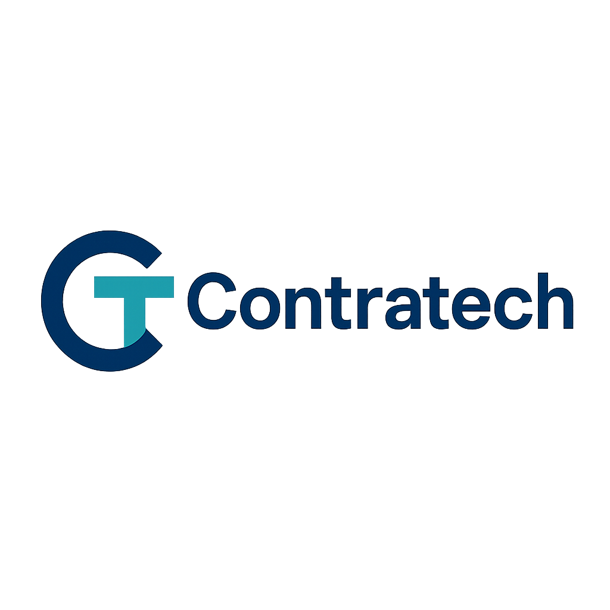
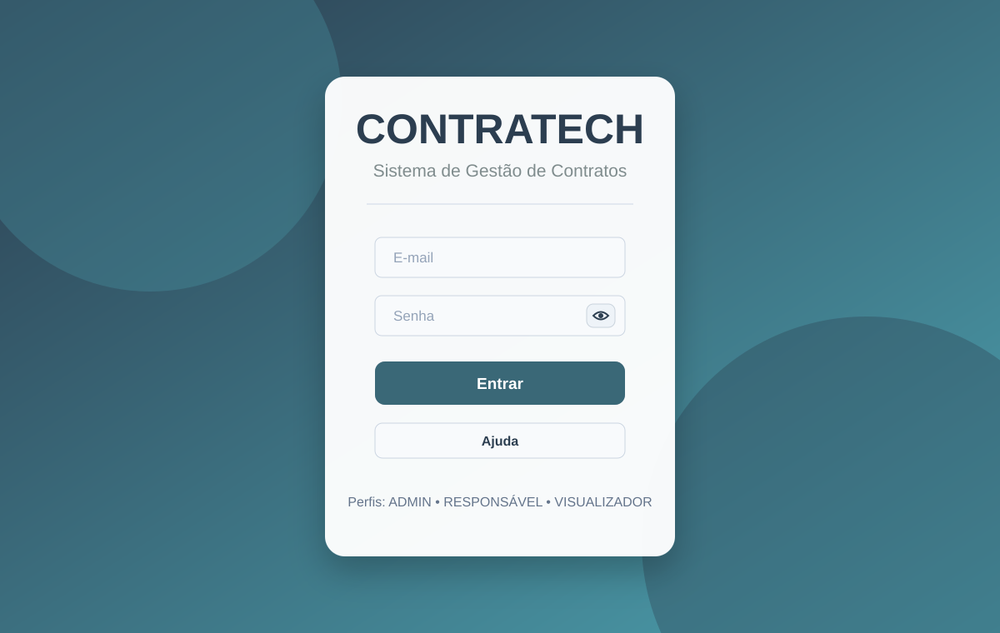
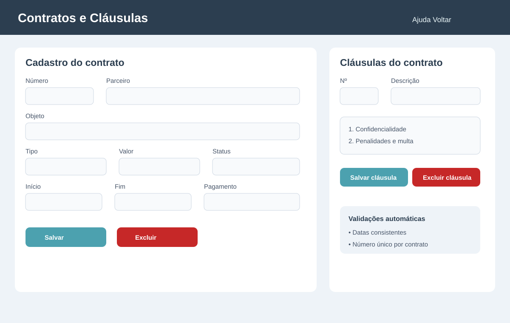
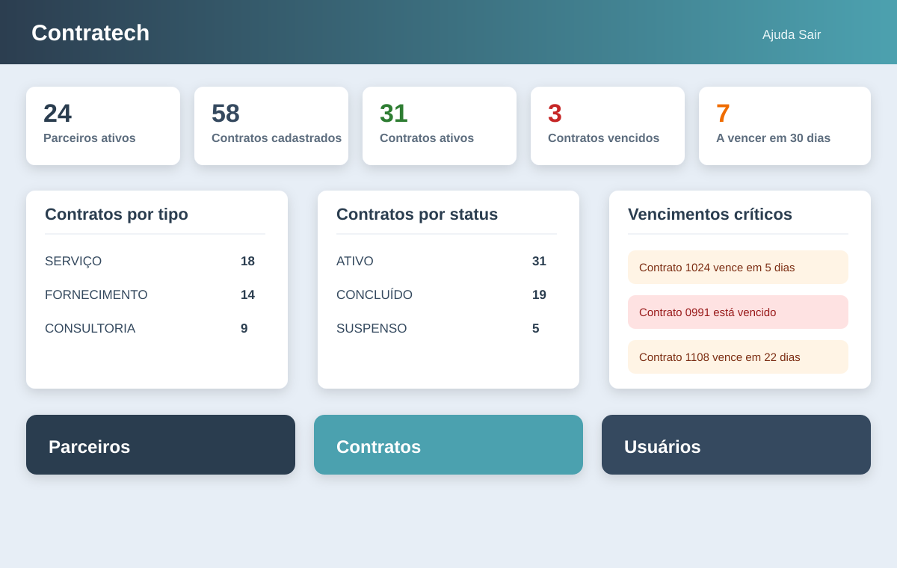
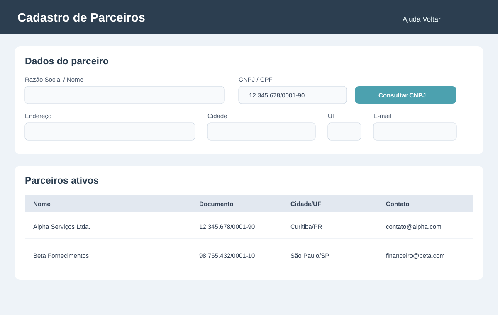
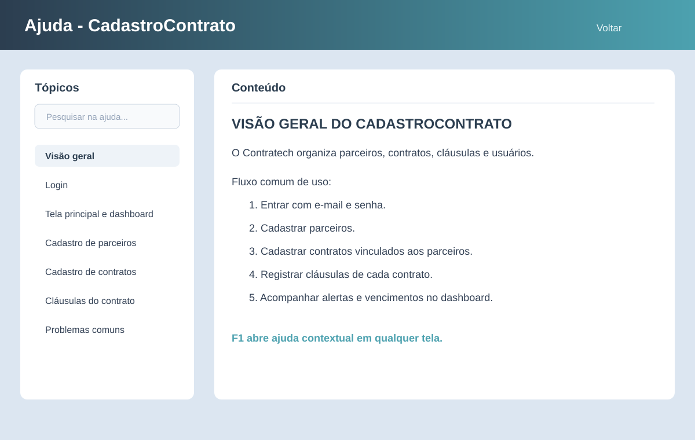

CONTRATECH
Boa noite, somos a equipe Contratech e apresentamos uma solução para organizar e controlar contratos com menos risco, menos retrabalho e mais visão de negócio.
Contratos não podem depender de papel, planilhas soltas ou mensagens perdidas.
Muitos controles manuais geram perda de tempo, risco de erro, dificuldade para consultar informações e baixa segurança dos dados.
- Risco financeiro: multas, renovações esquecidas e contratos vencidos sem acompanhamento.
- Risco operacional: parceiros, contratos e cláusulas ficam espalhados em arquivos diferentes.
- Risco de governança: usuários sem limites claros para consultar, editar ou administrar cadastros.
Público-alvo
Pequenas empresas, prestadores de serviço, consultorias, áreas administrativas e equipes que precisam controlar contratos sem sistemas complexos.
Janela de alerta para contratos ativos próximos do vencimento.
Base única para parceiros, contratos, cláusulas e usuários.
Ajuda contextual disponível diretamente nas telas.
Uma aplicação simples para cadastrar, consultar, alterar e excluir informações com segurança.
O Contratech ajuda a empresa a controlar parceiros, contratos, cláusulas, vencimentos e usuários em uma única aplicação desktop.

03/08
Da tela inicial ao registro completo do contrato.
- Cadastros completos: parceiros, contratos, cláusulas e usuários.
- Consulta e manutenção: listar registros, selecionar, alterar dados e excluir com confirmação.
- Banco de dados: informações persistidas em PostgreSQL para manter histórico e organização.
- Demonstração sugerida: abrir o sistema, mostrar dashboard, cadastrar parceiro, criar contrato, editar informação, excluir/finalizar operação e mostrar listagens.

Dashboard que transforma contratos em decisão.
- Indicadores imediatos: parceiros ativos, contratos cadastrados, contratos ativos, vencidos e a vencer.
- Gestão por categoria: totais por tipo e por status ajudam a entender a carteira.
- Vencimentos críticos: lista priorizada para agir antes que o prazo vire problema.
- Entrega funcional: solução pronta para o problema proposto e com base para melhorias futuras.
Parceiros, contratos e cláusulas integrados para reduzir erros.
A consulta pública de CNPJ acelera o cadastro de empresas e as regras de negócio protegem a qualidade das informações.
- Parceiros organizados: documento, endereço, cidade, UF, CEP, telefone e e-mail.
- Contratos completos: número, parceiro, objeto, tipo, valor, multa, pagamento, datas, status e observações.
- Cláusulas vinculadas: cada contrato mantém suas cláusulas com numeração única.
- Validações: campos obrigatórios, datas coerentes, valores numéricos e documento duplicado bloqueado.

06/08Facilidade de uso com base técnica sólida.
- Diferenciais: redução de erros, economia de tempo, organização das informações e melhor controle do negócio.
- Segurança por perfil: ADMIN, RESPONSÁVEL e VISUALIZADOR delimitam permissões.
- Ajuda contextual: botão Ajuda e atalho F1 explicam cada módulo durante o uso.
- Tecnologias do curso: lógica de programação, orientação a objetos, Java 17, JavaFX, PostgreSQL, Maven, testes e manutenção.

07/08Contratech vende tranquilidade: menos retrabalho, mais controle e decisões mais rápidas.
Uma solução prática, acessível e adaptável para melhorar processos simples do dia a dia.
Por que escolher o Contratech?
- Centraliza informações essenciais em uma aplicação desktop objetiva.
- Reduz risco de perda de prazo com alertas e dashboard.
- Melhora governança com perfis de usuário e senhas protegidas por hash.
- Mostra como tecnologia aplicada resolve uma necessidade real e pode evoluir para novos módulos.